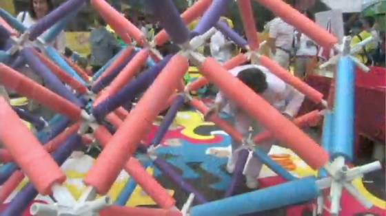
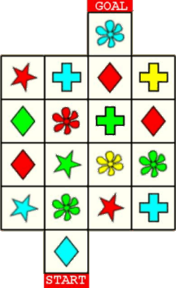
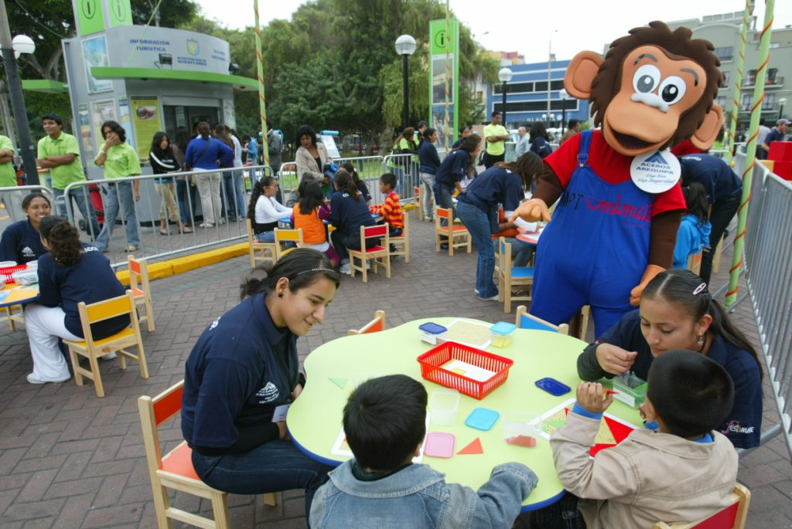
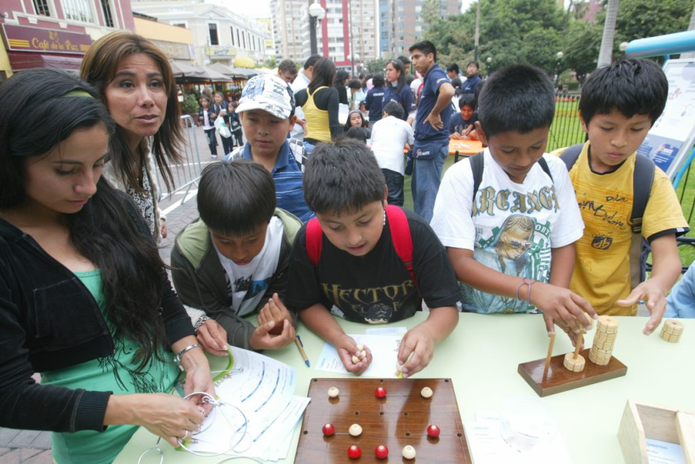
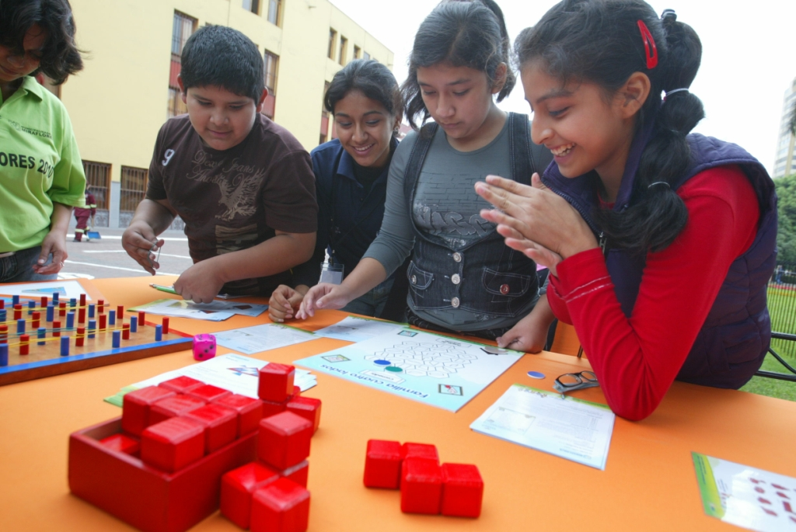
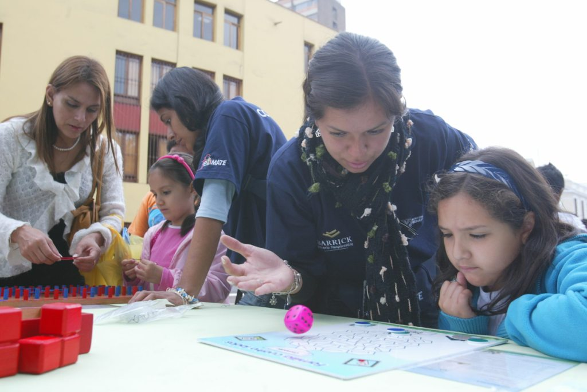
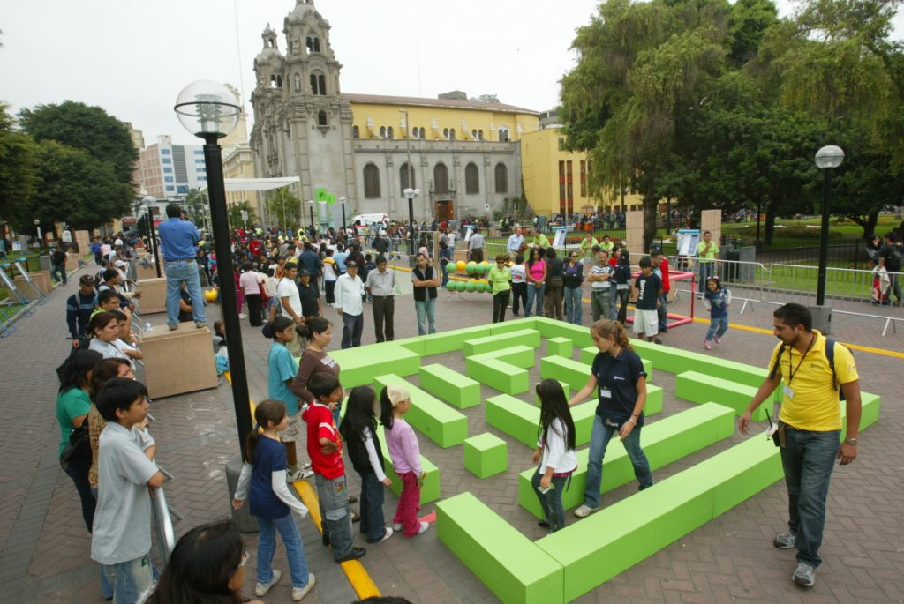
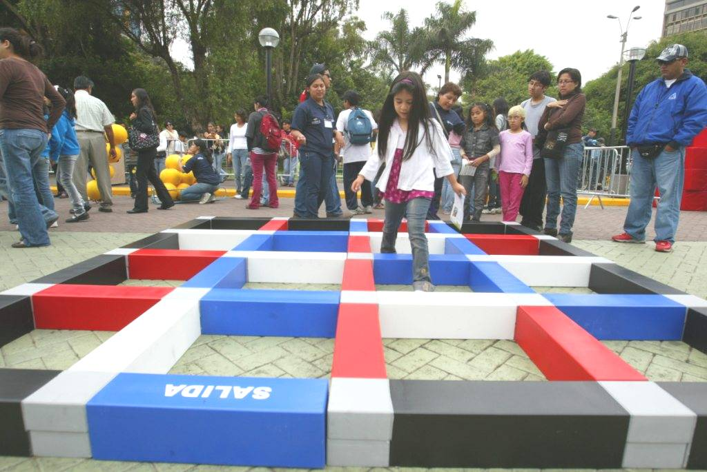
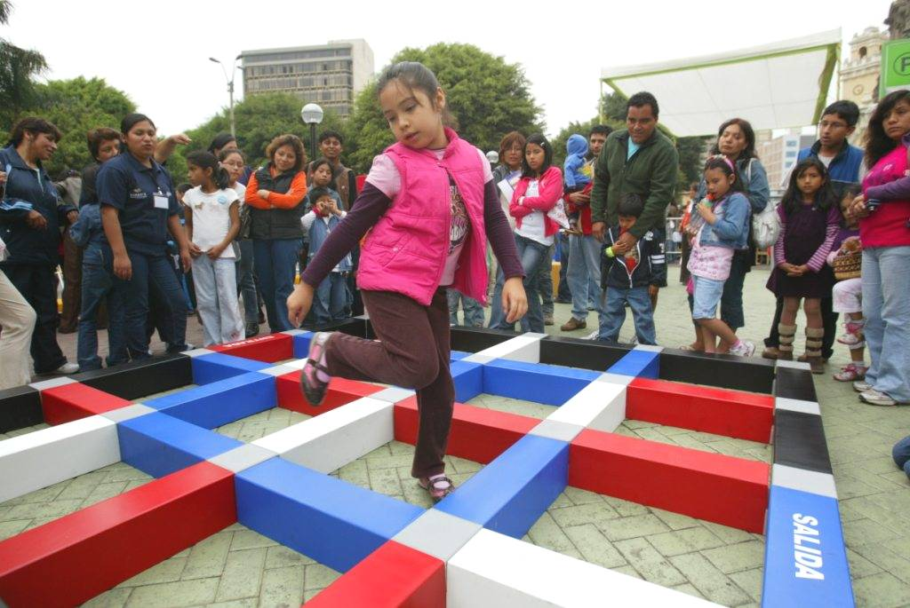
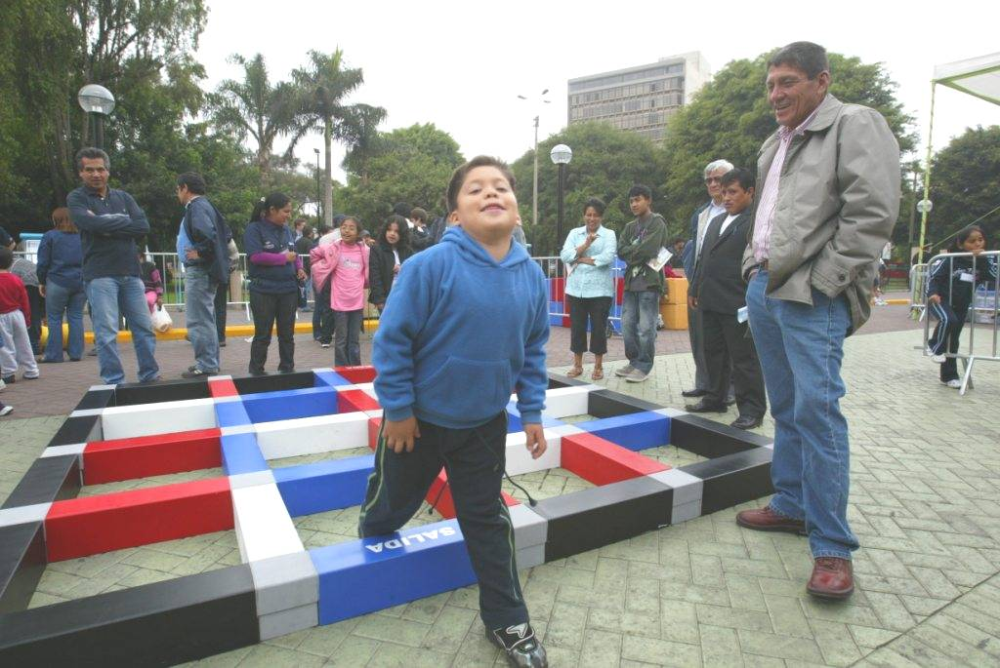

World Science Festival Street Fair, June 14, 2009:From June 10 through June 14 in 2009, there was a World Science Festival in New York City. There were events in various auditoriums, and on the last day there was a Street Fair in the streets around Washington Square Park. One of my no-left-turn mazes was a part of the Fair. Pictures of that maze are on my Easy Maze 1 page. The maze was drawn on an extremely large floor mat, and it was constructed by The Math Midway. Here is something else the Math Midway had at the Fair:  That looks really interesting, but I have no idea what it is. If you go to their site, you might be able to figure it out (but probably not).
|
|
I figured I could cure that problem by creating a maze that doesn’t use the no-U-turn rule. What I came up with is shown at the right. The rules are: Begin on the blue diamond and make a series of moves that will take you to the blue flower. Each move can be for any distance, either horizontally or vertically, but the square at the end of the move must have an object with the same shape or the same color as the object at the start of the move. The solution to this maze actually uses lots of If you are planning a games day in the future, you might want to include this Shapes and Colors maze. It is fairly interesting yet not too difficult. |
 |
Instituto APOYO is a non-profit organization that plans to create projects that will improve the education of mathematics in Peru. FESTIMATE in Mirafores is the first of their projects, and from the pictures they sent me, it looks very impressive. Here are some of their pictures:





|
The picture above shows FESTIMATE’s implementation of my no-left-turn maze which had appeared at the Science Festival Street Fair. You can imagine how happy I was to see kids lined up to go into a maze of mine. Also, note that interesting church in the background. The next three pictures show their implementation of one of Andrea Gilbert’s step-over mazes. |



|
The boy in the picture above is smiling because he just solved the maze (I finally figured out that “salida” means “exit.”) You can see the diagram of that maze if you go to this page of Andrea’s site. The diagram is in an interactive program that lets you try solving the maze. And while you’re in that program, you can click on “Puzzles” and get eight more, much harder step-over mazes. Both Andrea Gilbert and I were amazed at how great our mazes looked in these photographs. They certainly looked better than mazes built out of hay bales, or mazes drawn on floor mats. I sent an e-mail to Marcela Trinidad to ask how the mazes were constructed. Marcela is an organizer of the Festimate, and she is the one who initially contacted me about using my mazes. Here is Marcela’s reply: About the explication, let’s see... All the blocks are made of wood, like boxes, and painted. It’s really very simple but looks good, don’t you think? I think that is all. The hardest part was to make sure that each piece matched with the labyrinths’ dimensions. I have to confess that we made mistakes a couple of times, but corrected them immediately. It was so funny! |
|
Back to the home page. |